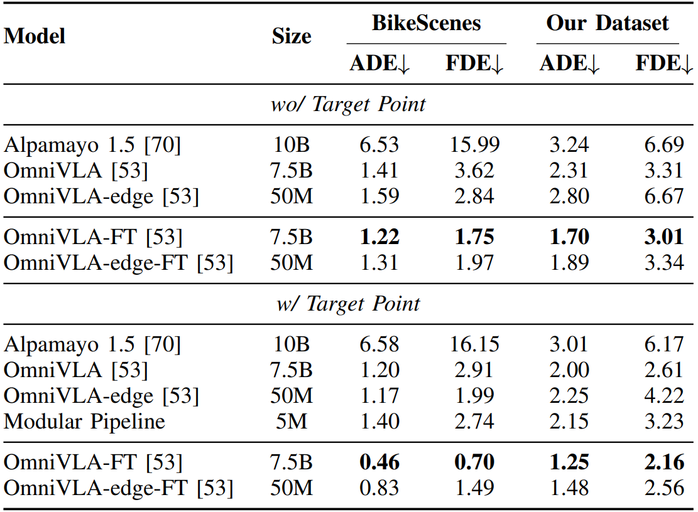

01
Shared Autonomy
The rider remains physically engaged while CyFI assists with navigation steering and emergency braking.
A human-centered shared-autonomy cycling platform supporting accessible outdoor mobility through autonomous steering, emergency braking, and multimodal rider feedback.

CyFI is an accessible semiautonomous cycle designed to enable blind and low-vision riders to cycle independently. The rider provides propulsion and retains manual braking, while CyFI guides navigation steering and handles emergency braking. Audio and vibrotactile feedback communicate upcoming system actions, and riders can request spoken descriptions of their surroundings. CyFI emerged through a two-year longitudinal co-design partnership with a blind mechanical designer and iterative evaluations involving 39 blind and low-vision participants. In the final evaluation, 94% felt safe and 76% trusted autonomous steering. A separate 1.2 km neighborhood ride examined sustained operation across intersections, parked and moving vehicles, stop signs, and changing roadway geometry, while revealing remaining limitations in current robot navigation models.
The rider remains physically engaged while CyFI assists with navigation steering and emergency braking.
Audio and vibrotactile feedback communicate system actions and environmental information during riding.
Evaluation progressed from structured riding environments toward community and sustained neighborhood operation.
Early prototypes supported iterative development of the physical platform, autonomous steering, and rider interaction design.


Key sensing, computation, feedback, and control components integrated into the current CyFI platform.

Hardware architecture connecting onboard computation, sensing, power distribution, rider interfaces, steering, and braking actuation.
.png)
Steering was empirically calibrated by determining actuator position in relation to vehicle curvature. With the tricycle positioned on a square reference surface, the front wheels were first aligned with the vehicle's longitudinal axis. Across the actuator range, actuator position was stepped in 5% increments and the front-wheel angles relative to the reference surface were measured using a goniometer. These measurements were combined with the tricycle's wheelbase and track width to compute the corresponding Ackermann steering curvature, producing a mapping from desired curvature to actuator position.
The implemented steering controller combines proportional feedback with a feedforward term and a deadband in the controller's native potentiometer units. Commands are updated at 50 Hz, with steering limited to ±30° and a maximum steering rate of 10°/s.
Real-world bicycle sensor streams are synchronized to construct RGB observations paired with frame-level future trajectories.
An anonymized forward-facing visualization of synchronized real-world riding data with future-trajectory waypoint annotations.
Sensor streams provide synchronized RGB observations and high-precision navigation measurements.
RTK-fixed solutions provide centimeter-level position anchors and are supplemented with validated PPK solutions when available.
For each RGB frame, eight future waypoints are sampled at 3 Hz.
Navigation models are evaluated in closed-loop interactive environments reconstructed from bicycle-perspective observations.
Closed-loop simulation rollouts across seven evaluated navigation policies. Videos are displayed at 2× playback speed.
Scroll or swipe horizontally to compare all seven policies →
We compare open-loop trajectory prediction with and without target points as input on BikeScenes and our held-out test split.

CyFI was developed and evaluated with blind and low-vision participants across formative and final evaluation studies.
All 25 final-evaluation participants completed their routes. Across participant rides, the median travel distance was 141.59 m (IQR = 155.87 m), the median riding speed was 0.50 m/s (IQR = 0.29 m/s), and participants requested a median of three on-demand environmental descriptions per ride.
Participant trajectories are direction-aligned to a common route frame and normalized relative to route displacement. Site names are anonymized for the supplementary website.
Direction-aligned trajectories from the twenty participants evaluated at Site 1.

Direction-aligned trajectories from the five participants evaluated at Site 2.

An anonymized short real-world snippet showing the rider briefly raising both hands while CyFI continues the maneuver.
An anonymized third-person view of CyFI during sustained real-world riding across a residential neighborhood route.